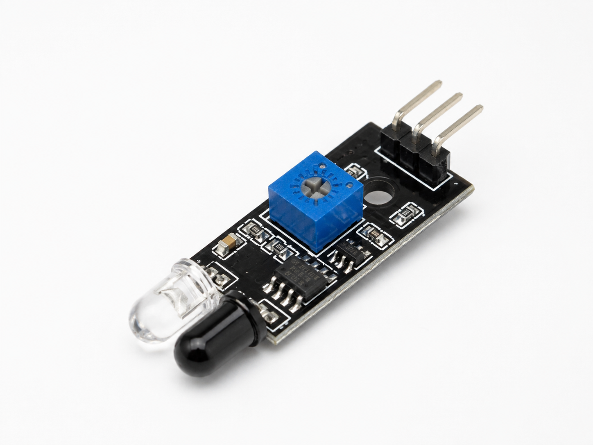
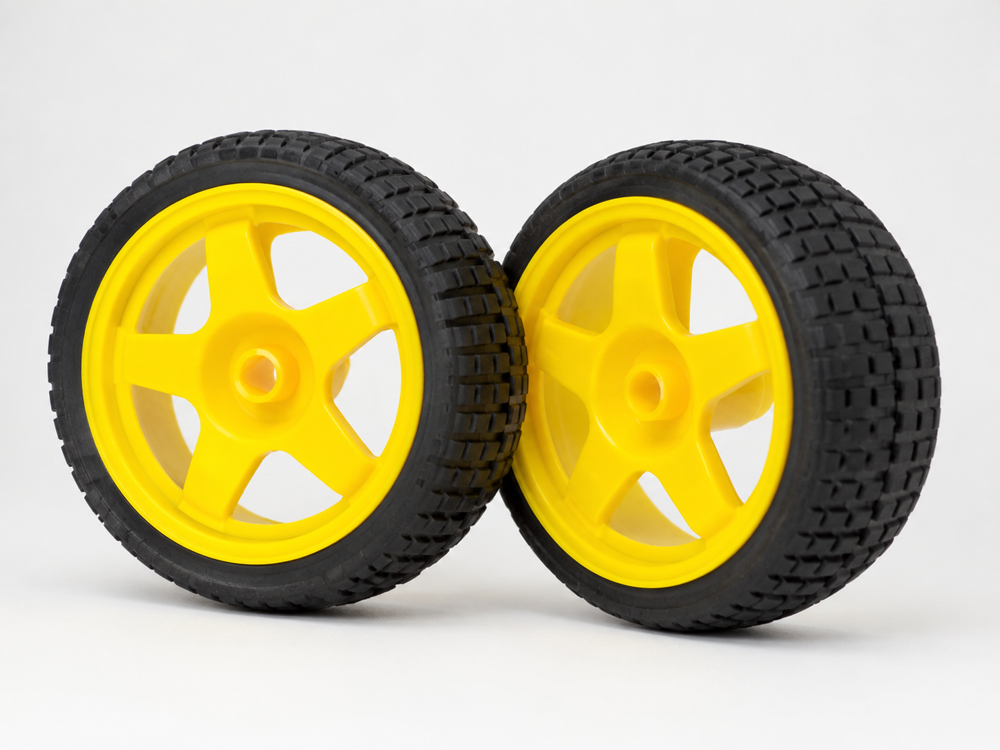
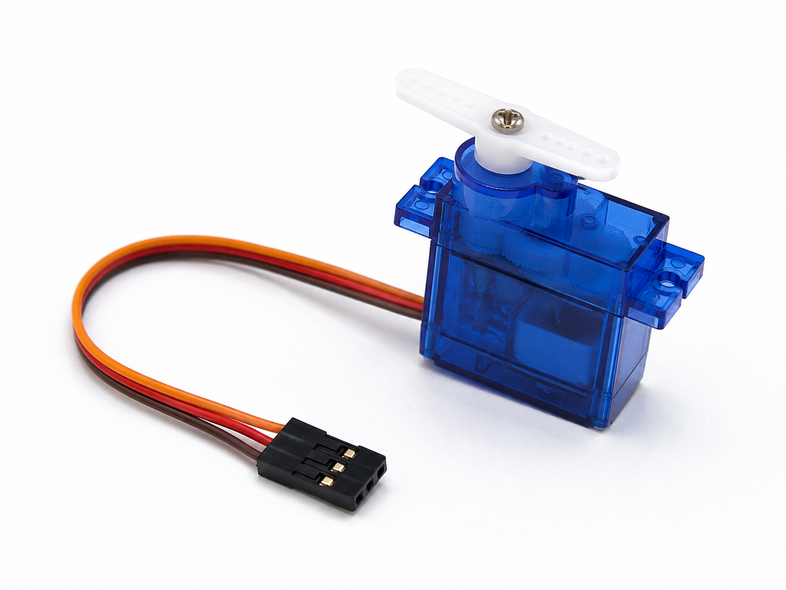
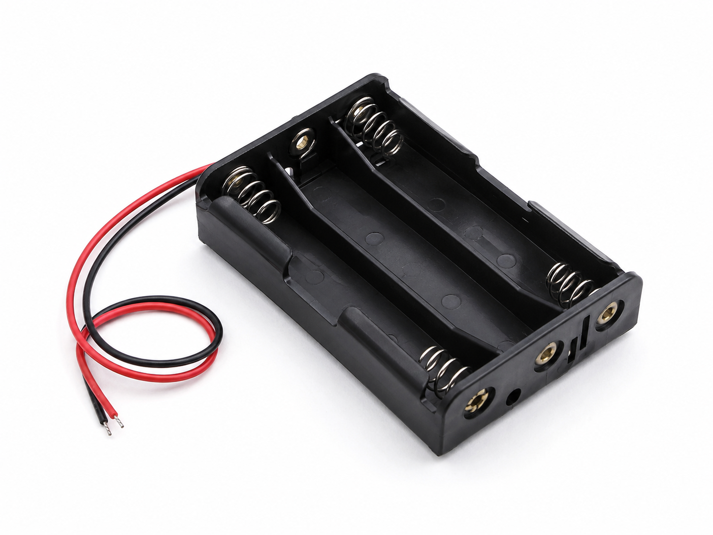
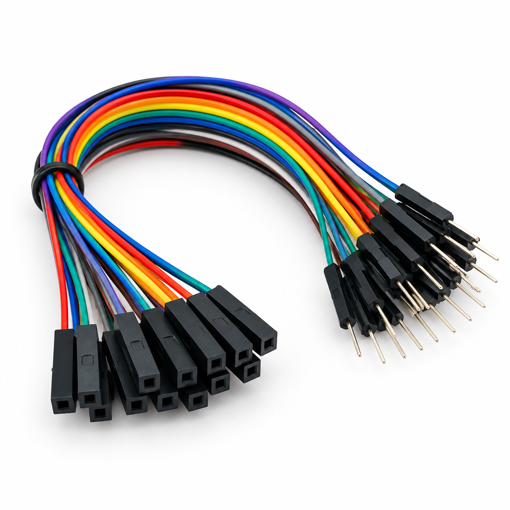

Bộ điều khiển
Arduino Uno
Nhận dữ liệu từ cảm biến, xử lý chương trình và điều khiển hoạt động của robot.
Dùng cho: cả ba mẫu robot.
Kiến thức cơ bản
Mỗi linh kiện đảm nhận một vai trò khác nhau trong robot. Người dùng cần hiểu chức năng, chọn đúng loại và đủ số lượng theo từng mẫu robot.
Bộ điều khiển
Nhận dữ liệu từ cảm biến, xử lý chương trình và điều khiển hoạt động của robot.
Dùng cho: cả ba mẫu robot.

Chuyển động
Tạo chuyển động quay cho bánh xe, giúp robot tiến, lùi và thay đổi hướng.
Dùng cho: Robot dò đường và Robot tránh vật cản.

Cảm biến
Sử dụng tín hiệu hồng ngoại để nhận biết sự khác nhau giữa vạch và nền trên mặt đường.
Dùng cho: Robot dò đường.

Cảm biến
Sử dụng sóng siêu âm để đo khoảng cách từ robot đến vật cản phía trước.
Dùng cho: Robot tránh vật cản.

Điều khiển công suất
Là mạch trung gian giữa Arduino và động cơ DC, giúp điều khiển chiều quay và tốc độ động cơ.
Dùng cho: Robot dò đường và Robot tránh vật cản.

Cơ khí
Bánh xe kết hợp với động cơ DC để truyền chuyển động và giúp robot di chuyển trên bề mặt.
Dùng cho: Robot dò đường và Robot tránh vật cản.

Điều khiển góc
Cho phép điều khiển vị trí theo góc, phù hợp với các khớp cần chuyển động chính xác.
Dùng cho: Cánh tay robot mini.

Nguồn điện
Cung cấp điện cho bộ điều khiển, cảm biến và động cơ trong quá trình robot hoạt động.
Dùng cho: cả ba mẫu robot.
Lưu ý: sử dụng mức điện áp phù hợp với từng linh kiện.

Kết nối
Kết nối Arduino với cảm biến, module điều khiển và các linh kiện khác trong hệ thống.
Dùng cho: cả ba mẫu robot.
Lưu ý: cần kết nối đúng VCC, GND và chân tín hiệu.